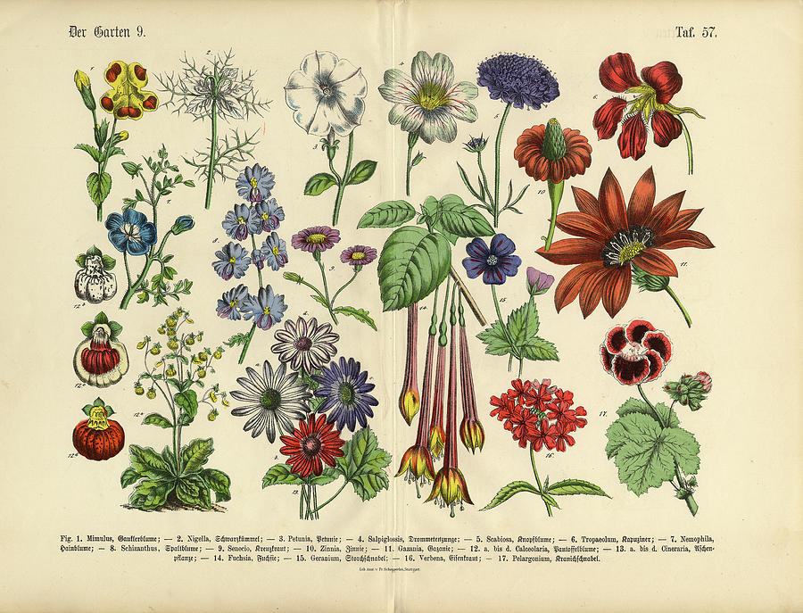

Floriography is a coded communication where each flower and color holds symbolic meaning. Stemming back thousands of years, the language of flowers reached a pinnacle of popularity in the Victorian era. Intentional flower combinations allow the giver to communicate without uttering a word.
In France, the obsession with using flowers to send coded messages took off in the early 1800s. In 1819, the first floriography dictionary was published, Le langage des Fleurs by Madame Charlotte de la Tour. Hundreds of floral meaning dictionaries and guides soon followed.
The trend spread across Europe, and floriography grew especially popular in Victorian-era England. In this famously buttoned-down era, many sentiments could never be expressed directly in "polite" society. The language of flowers became a way for the upper class to send coded, secret messages.
Evans, Linsay. "Floriography Guide: The Language of Flowers." Petal Republic, https://www.petalrepublic.com/floriography-guide/